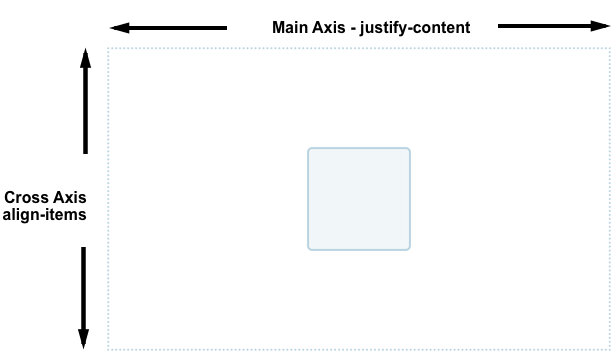

Flex-элементы
Одной из причин быстрого роста популярности flexbox среди web-разработчиков было то, что впервые были предоставлены адекватные возможности выравнивания. Он предоставил адекватное вертикальное выравнивание, и стало возможным, наконец, легко поместить элемент в центр по вертикали. В этом руководстве детально рассматривается, как выравнивание и распределение работают во Flexbox.
Для центрирования элемента по перекрёстной оси (в данном случае - вертикальной) используется свойство align-items. Для центрирования элемента по главной оси (в данном случае - горизонтально), используется свойство justify-content.

На примере ниже можно изменить размер контейнера или вложенного элемента, но элемент всегда останется по центру.
Активное изучение
Выравнивание одного элемента при помощи align-self
Свойство align-items устанавливает align-self для всех flex-элементов как для группы. Это означает, что можно явно указать значение lign-self для конкретного элемента. Свойство align-self может принимать все те же значения, что и свойство align-items, а так же значение auto, которое сбросит значение, установленное в flex-контейнере.
В следующем примере, у flex-контейнера установлено align-items: flex-start, означающее, что все элементы будут выравнены по началу перекрёстной оси. У первого элемента с помощью first-child селектора установлено align-items: stretch; у следующего элемента с классом selected установлено align-self: center. Можно изменять значение align-items на контейнере или align-self на элементе для изучения их работы.
Активное изучение
Изменение основной оси
До сего момента мы изучали поведение при flex-direction установленном в row, в языке, использующем написание сверху вниз. Это означает, что основная ось идёт горизонтально, а выравнивание по перекрёстной оси сдвигает элементы вверх или вниз.

Если изменить flex-direction на column, align-items и align-self будут сдвигать элементы влево или вправо.

Активное изучение
.png)